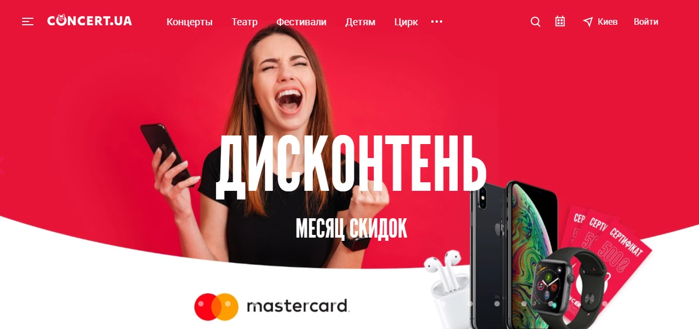
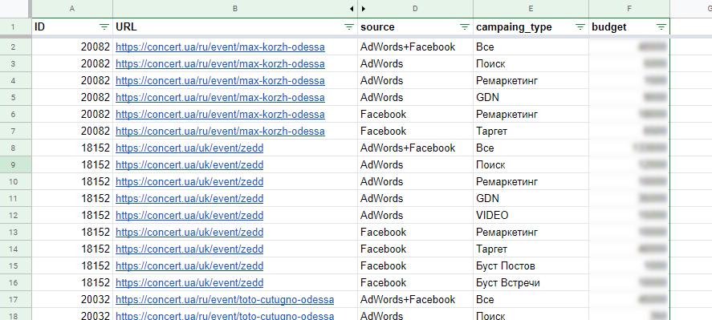
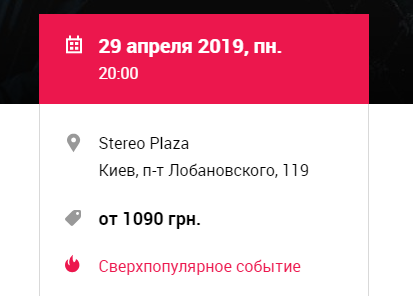
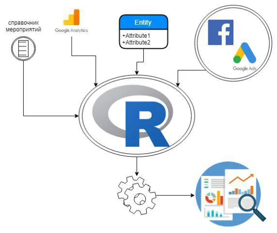
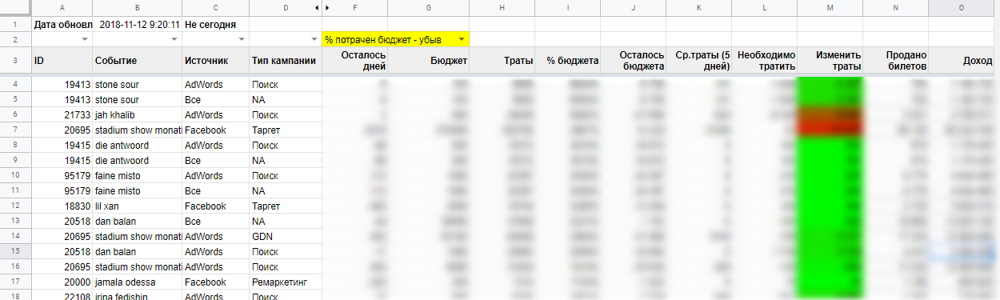

Аналитический инструмент для Concert.ua — контролируем рекламные бюджеты сотен мероприятий в реальном времени
Период продвижения: сентябрь 2016 года — по сегодня.
Регион продвижения: Украина.
Команда проекта: Илья Стрижак(Middle PPC-специалист), Андрей Коваль (тимлид команды PPC), Оксана Верлан (менеджер проекта).
Услуга: PPC с абонплатой (c сентября 2016 по декабрь 2018 года); реклама в Facebook (с декабря 2017 года по сегодня).
Клиент: Concert.ua.
Большая часть рекламного бюджета агрегатора билетов уходит на онлайн-кампании. Если вы однажды поинтересовались премьерой фильма, то, скорее всего, реклама агрегатора не даст вам забыть о нем — напомнят и в социальных сетях, и в поиске, и на других сайтах.
При этом представьте, что ежедневно проходят десятки премьер и концертов, все они рекламируются с помощью десятка инструментов на различных платформах. За эффективным использованием рекламных бюджетов в таком случае должен следить отдельный специалист на фултайме. Но зачем, если мы умеем работать с базами данных и языком R?
В этой статье мы поделимся одной из историй нашей работы с Concert.ua, будут и другие — следите за лентой.
Впервые текст был опубликован на блоге Netpeak
Кто клиент
Сoncert.ua — один из лидеров по продаже билетов на мероприятия в Украине. Сервис сотрудничает с сотнями концертных площадок и организаторов.

Цели и задачи
У рекламных кампаний по продаже билетов на мероприятия несколько нюансов:
- у каждого мероприятия есть дата проведения, после которой рекламную кампанию необходимо отключить;
- любое мероприятие привязано к месту проведения, площадка имеет определенную вместительность и если все билеты проданы, необходимо отключать рекламные кампании;
- место проведения также привязано к конкретному городу и это необходимо учитывать в географии продвижения;
- у каждого мероприятия есть четкий рекламный бюджет и его превышение влияет на рентабельность мероприятия.
К вышеперечисленному добавьте, что в нескольких рекламных платформах одновременно могут продвигаться десятки и даже сотни мероприятий, у каждого из которых есть своя дата и площадка проведения, бюджет и геотаргетинг.
В таких условиях достаточно сложно следить за рекламными кампаниями — мы решили автоматизировать контроль расходования бюджета по всем мероприятиям, которые мы продвигали для Concert.ua.
Для начала уточним, что решение аналитической задачи проходит по следующему алгоритму:
- Формулировка проблемы. Именно с этого начинается решение аналитической задачи.
- Определяем данные. Определяемся с тем, какие именно данные и в каком виде помогут нам решить проблему.
- Собираем источники. Необходимо выяснить, из каких источников можно собрать нужные для решения данные.
- Собираем инструменты. Определяем технологии и методы, с помощью которых можно реализовать запланированное решение.
- Реализация. Когда определились с тем, что и как будем делать, остается технически реализовать задуманное.
- Решение. Работающее решение передается заказчику.
Описание проблемы и возможное ее решение мы уже рассмотрели. Двигаемся дальше.
Что мы сделали
Собрали источники данных
Для сбора отчета мы использовали следующие источники:

Этот справочник развернут в Google Таблице и хранит информацию по каждому мероприятию: id, ссылку на страницу мероприятия и выделенный рекламный бюджет в разрезе источников и инструментов продвижения.
Специалист, ответственный за проект, поддерживает этот справочник в актуальном состоянии.
Посадочные страницы мероприятий
Информацию, собранную с посадочных страниц мероприятий, можно включить в справочник проектов, но мы хотели максимально уйти от ручных действий, поэтому с посадочных страниц парсили дату и место проведения мероприятия.

Рекламные платформы
На момент разработки описанного решения мы вели рекламу Concert.ua в Google Ads и Facebook и собирали информацию о потраченных бюджетах по API из этих рекламных платформ.
Google Analytics
Еще один источник, из которого мы запрашивали количество транзакций и прочую информацию электронной торговли. Эти данные мы использовали для расчета количества проданных билетов и полученного дохода.
Какие инструменты использовали
В ходе разработки мы пользовались только бесплатными инструментами:
- движок сбора и трансфера данных, а также парсинга посадочных страниц написали на языке R с использованием следующих пакетов:
- RGA — сбор данных из API Google Analytics (мануал по теме);
- RAdwords — сбор данных из Google Ads (мануал по теме);
- rfacebookstat — сбор данных из API Facebook (мануал по теме), официальная русскоязычная документация);
- rvest — парсинг веб-сайтов;
- tidyverse — манипуляция с данными.
- Google Таблицы для хранения справочной информации о мероприятиях и для визуализации данных.
R-скрипт запускается ежедневно и выполняет следующие действия:
- Запрашивает справочник мероприятий.
- Собирает данные с посадочных страниц мероприятий.
- Собирает данные о проданных билетах из Google Analytics.
- Запрашивает данные из рекламных платформ за прошлый год, и отдельно — за последние 5 дней.
- Связывает полученные данные по id мероприятия.
- Рассчитывает дополнительные метрики.
- Полученный результат отправляет в Таблицы Google.
- На базе загруженных данных пересчитывается визуализация — отчеты.

Все названия рекламных кампаний и групп регламентированы и содержат id мероприятий, по которым данные из рекламных систем связываются со справочником проектов.
Данные о продажах билетов в Google Analytics содержат название мероприятия из справочника и по этому полю соединяются со справочником.
Данные, полученные в результате парсинга, связываются через URL мероприятия, указанного в справочнике.
Таким образом связываются данные, полученные из всех перечисленных источников.
Возможности инструмента автоматизации для Concert.ua
Мы автоматизировали отчет, в котором по каждому мероприятию рассчитывались следующие показатели:
- сколько дней осталось до мероприятия;
- выделенный бюджет на продвижение;
- бюджет, потраченный на рекламные кампании;
- процент израсходованного бюджета;
- остаток от выделенного бюджета;
- среднесуточные траты за последние 5 дней;
- сколько средств необходимо тратить в сутки, чтобы израсходовать бюджет к дате проведения мероприятия;
- корректировка расходования бюджета;
- сколько продано билетов;
- доход от продажи билетов.
Все показатели в таблице сгруппированы по параметрам:
- ID мероприятия;
- название мероприятия;
- рекламный источник (Google Ads, Facebook);
- тип рекламной кампании (поиск, ремаркетинг, таргетированная реклама и так далее).

Данные в отчете обновляются ежедневно, к тому же можно менять сортировку и применять к нему ряд фильтров: id события, название события, источник, тип рекламных кампаний.
Доступные параметры сортировки отчета:
- процент потраченного бюджета — по возрастанию / убыванию;
- осталось дней до мероприятия — по возрастанию / убыванию;
- необходимая корректировка трат — по возрастанию / убыванию.
Результаты
Автоматизация помогает специалистам по контекстной рекламе, работающим с concert.ua:
- Стало проще контролировать остатки бюджета в рекламных кампаниях благодаря удобным визуализациям.
- Появилась возможность следить за динамикой охвата каждого отдельного события сразу в двух системах: и в Google, и в Facebook.
- Команда по контекстной рекламе сэкономила в среднем 3 часа одного специалиста в день на составление сводки по темпам трат и динамике расходования рекламного бюджета.
- Специалисты смогли оперативнее замечать просадки в кампаниях в той или иной платформе и вовремя их компенсировать.
Илья Стрижак, Middle PPC Specialist:

Инструмент позволяет точнее работать с разбивкой бюджета, контролировать баланс кампании по каждому событию в разных системах. Так значительно проще следить за эффективностью продвижения мероприятий. Контроль всех этих данных вручную потребовал бы привлечения отдельного специалиста.
Выводы
Потратив всего 30 часов на создание и отладку инструмента, мы, по сути, автоматизировали целый участок в работе команды специалистов по контекстной рекламе. Без подобной автоматизации практически невозможно держать руку на пульсе рекламных кампаний десятков мероприятий, поэтому значение инструмента в денежном эквиваленте трудно переоценить.
Смотрите видео о том, как Concert.ua проводили рекламную кампанию концертов Imagine Dragons, Monatik и 30 Seconds to Mars — кейсами делятся менеджер проектов Netpeak Оксана Верлан и ведущий интернет-маркетолог Concert.ua Юлия Морарь.